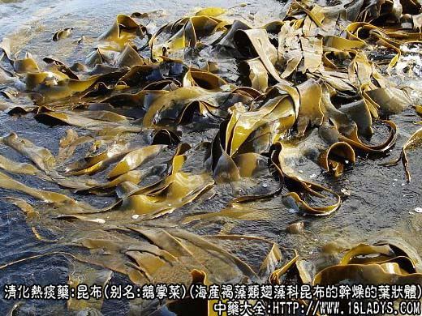
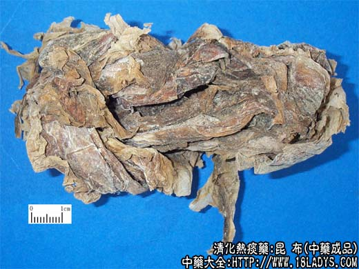

原文连接:https://www.daquan.com/post/2182.html



昆布为少常用中药，《名医别录》列为中品。商品来源主要有昆布（鹅掌菜）、裙带菜及海带三种，均作昆布药用。
1、昆布
别名：鹅掌菜。
来源：为海产褐藻类翅藻科多年生植物昆布的干燥的叶状体。
产地：主产于浙江、福建。
性状鉴别：叶状体卷缩成不规则的团块，全体呈黑棕色或深棕色。表面被有白色盐霜，革质而硬脆。用水浸软后，完整者长30～50厘米。固着器呈分叉的树枝状。柄部圆柱形，近叶片部渐扁平。叶片轮廊呈卵圆形，羽状深裂。革质柔滑。表面有细纵皱纹，中央部分稍厚，两侧裂片长舌状，有锯齿或全缘。气腥，味咸。
主要成分：含碘、昆布素（多糖类）、藻胶素、胡萝卜素、维生素B1B2、褐藻氨酸。
药理作用：①软坚散结，消痰清热，用于治疗瘿瘤。可能与其所含碘化物有关，因碘为甲状腺素主要成分，碘摄入不足能导致甲状腺素不足，引起甲状腺肿大（瘿瘤），而内服昆布能补充碘的摄入量，纠正甲状腺素不足，从而使肿大的腺体逐渐缩小，甚至消散，所以说它能软坚散结。
②降压。据最近研究，海带提取物所含之褐藻氨酸为一降压有效成分，动物实验证实有轻微降压作用，但维持时间较短。
临床应用：主要用于治疗瘿瘤（单纯性甲状腺肿大），对早期增生性肿大有一定效果，但需长期（3月～半年）坚持服药，常配海藻，方如海藻玉壶丸加减。
又治慢性颈淋巴腺炎，常配夏枯草、牡蛎等，方如昆布消疬汤。
又可用于防治高血压、煎汤常服。
用量：6~9g。
处方举例：昆布消疬汤：昆布9g、海藻9g、夏枯草15g、牡蛎30g（先煎）、柴胡6g、白芍9g、陈皮6g，水煎服。
2、裙带菜
来源：为褐翅藻科植物带菜干燥的叶状体。
产地：主产于辽宁、山东、浙江。
性状鉴别：形状与上种相似，用水浸软后，可出大量粘液。完整者长20～100厘米，叶片轮廓长卵圆形，羽状深裂。质薄柔滑，半透明极易剥离成两层，叶中央有一条肥厚的筋脉，裂片长舌形，全缘。气腥，味咸。
3、海带
来源：为海带科一年或二年生大形褐藻类海带科植物海带干燥的叶状体。
产地：自然生长的海带分布限于辽宁和山东两个半岛。人工养殖的已推广到浙江、福建、广东沿海。
性状鉴别：叶状体多纵叠捆成把，全体绿褐色或黑褐色，少有棕黄色。表面被有白色盐霜。革质而硬脆或质薄而脆。用水浸软展开后，完整者长达1米～6米，宽7～20厘米以上，固着器呈叉状分歧。柄部粗短，下部圆柱形。叶状体长带状，革质或质薄柔滑，半透明状，中部较厚。由中部向两侧渐薄。全缘或有波状皱褶。气腥，味咸。
以上三种均以色黑褐，质厚，无砂石者为佳。
炮制：切咀，生用。
效用：同海藻。
注：①大部分地区习用的昆布为上述三种，常混同药用，但以昆布为正品。
②广东习用的“昆布”，别名海白菜，为绿藻类石莼科植物石莼及孔石莼的干燥叶状体。呈不规则的片状，黄绿色、质薄如纸，较易破碎。用水浸软后呈膜状薄片，似干白菜叶。气腥，味微咸。河南、福建、湖北少数地区也以之作昆布代用品。据《海药本草》记述本品：“主风秘不通，五隔气，并脐下结气，煮汁饮之，湖人用治疳疾”。与昆布疗效不同。
③湖南习用之昆布为萱科藻类植物鹅肠菜干燥的叶状体。呈不规则团块，棕褐色或褐色。质薄脆，用水浸软展开呈长带形，长10～40厘米，宽1～2.5厘米，丛生于一盘状固着器上。气腥，味咸。